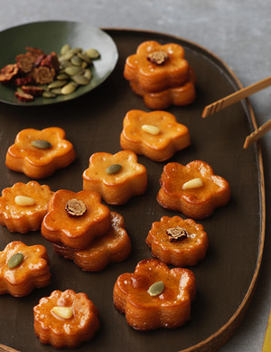
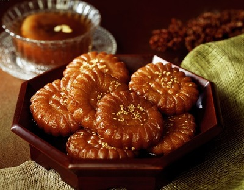
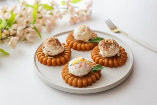
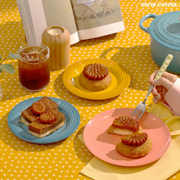

Yakgwa is a traditional Korean sweet pastry that is fried and coated in syrup (Jupcheong) with flavors of ginger and honey.
It was considered an expensive dessert (King's dessert) in the past, so our ancestors couldn't eat it very often. It was a rare dessert that can be had on special holidays such as Chuseok (harvest day), marriage, and New Year.
It was made with many different shapes. But the most common shape is a flattened flower shape that started from the Joseon era to stack better.
 This is one of my favorite Korean desserts. It is very chewy and sweet, which also goes well with vanilla ice cream.
Since Yakgwa became popular again in Korea, many different desserts started to appear with Yakgwa, such as Yakgwa cookies, Yakgwa chips, Yakgwa cake, etc.
Ice cream is my all-time favorite desesert. I can even have ice cream for every meal.